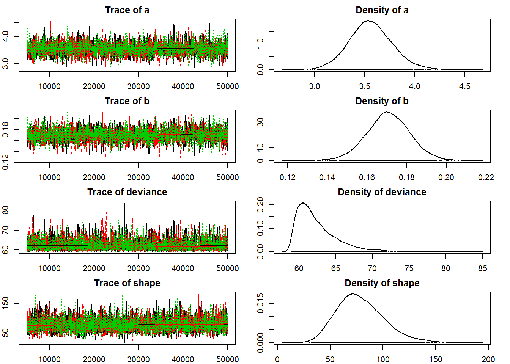
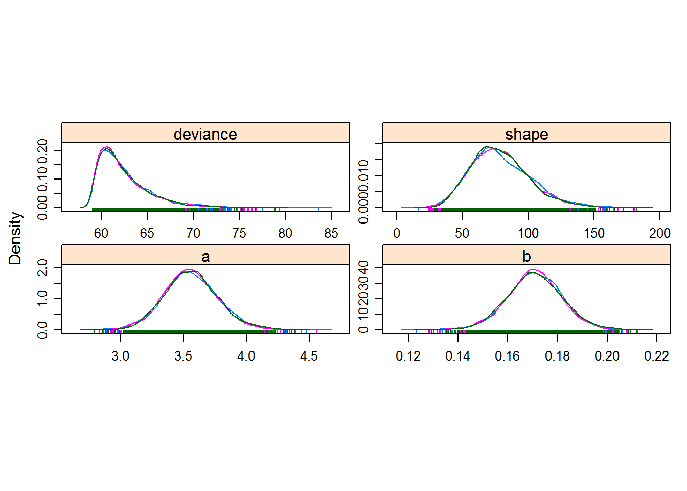
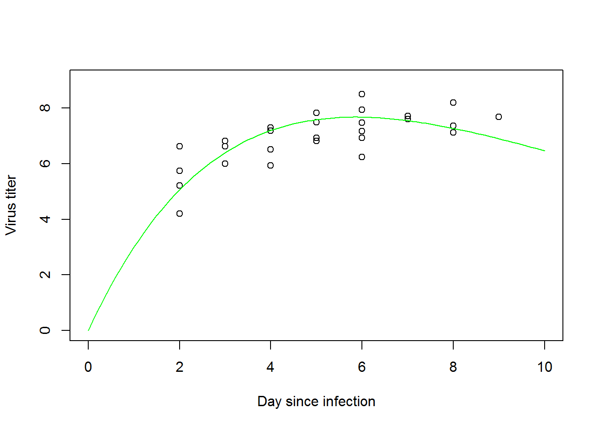
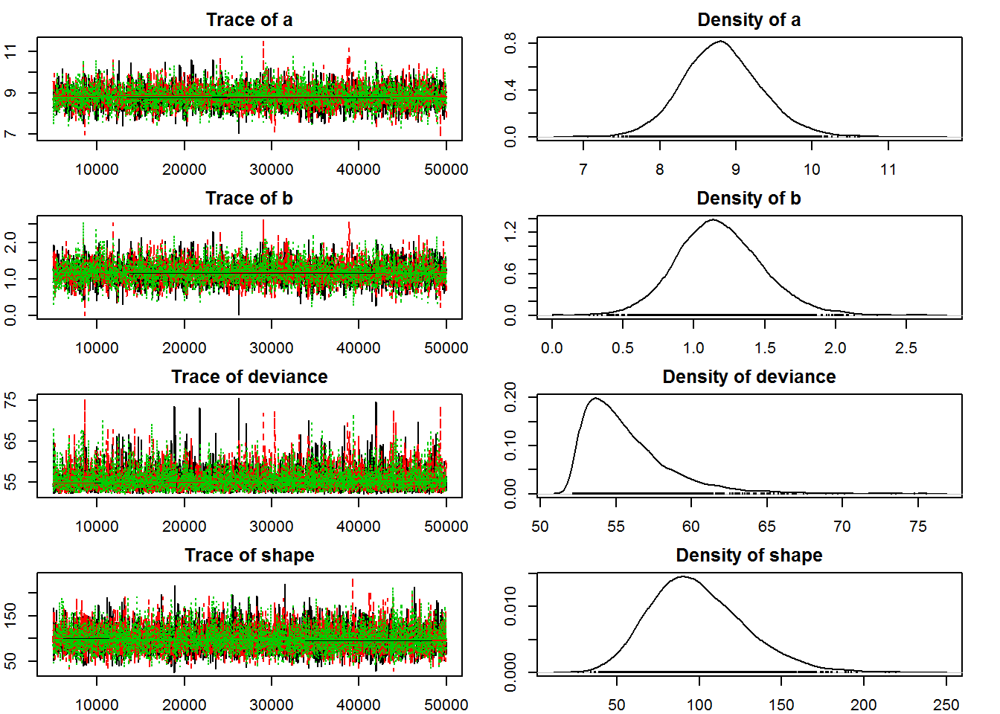
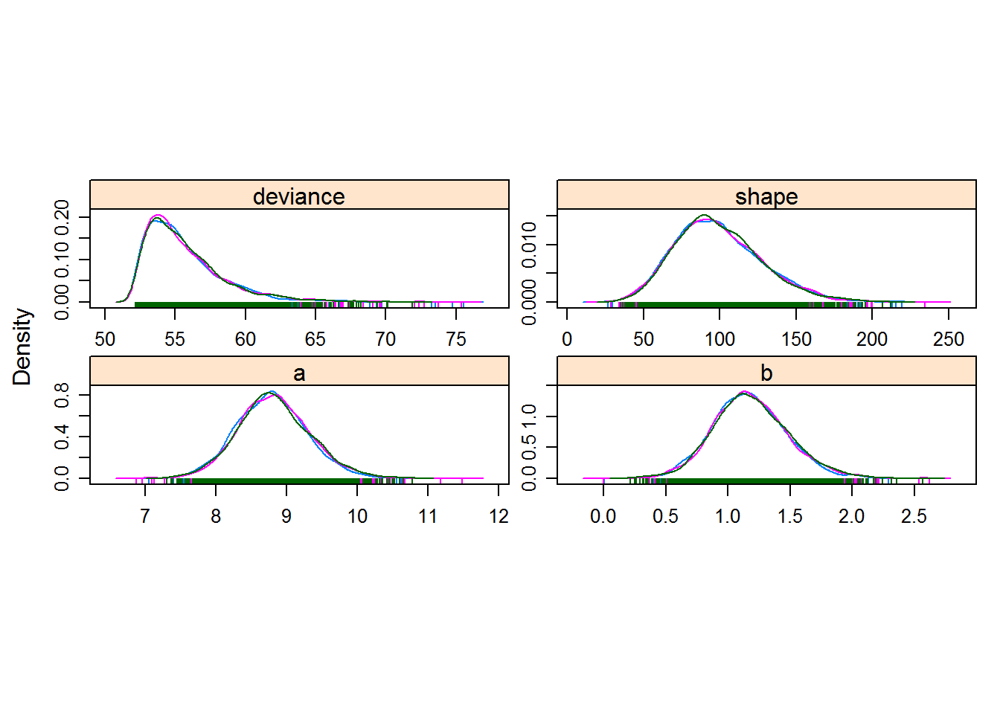
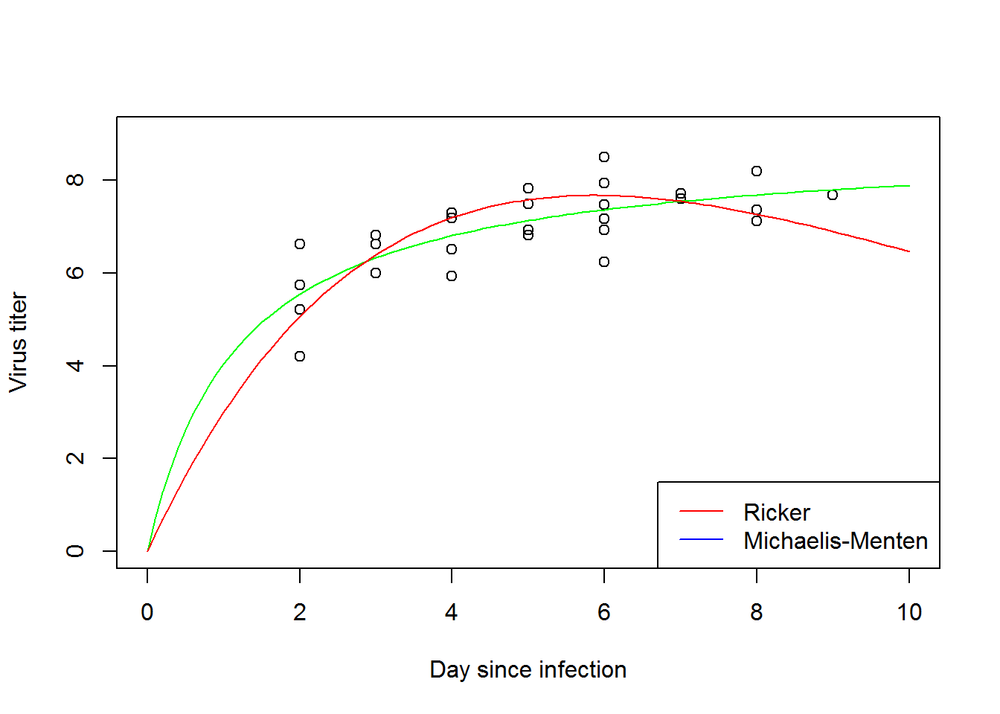
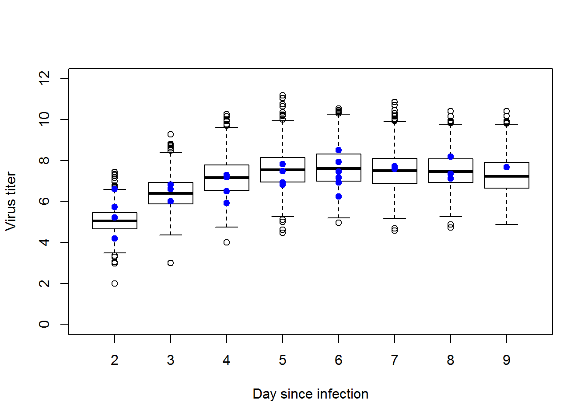
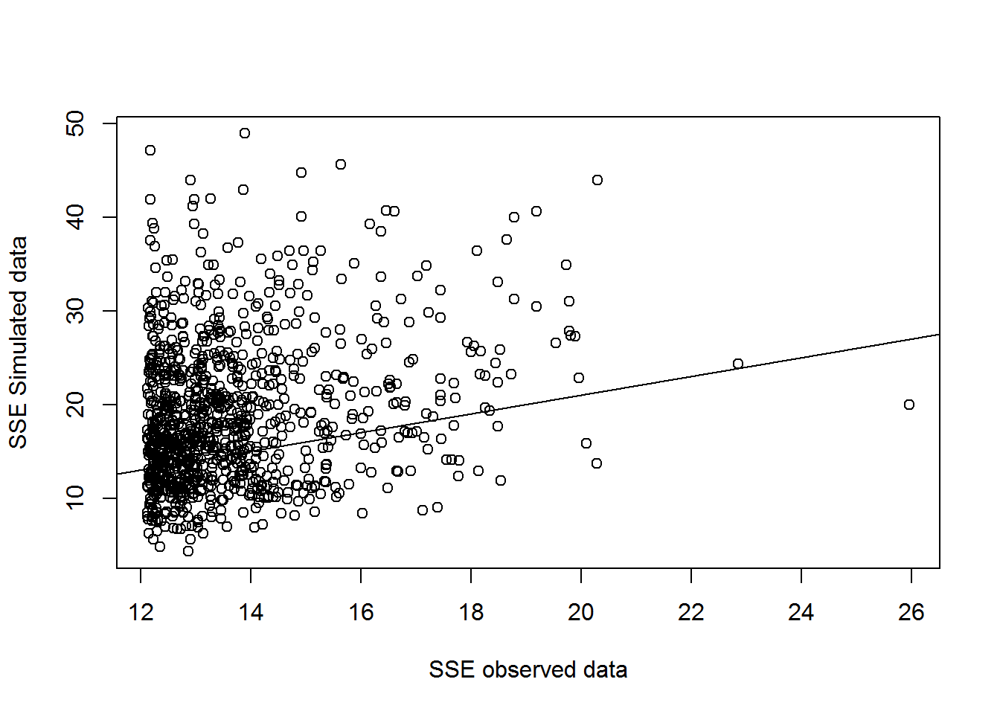

Creating file and and setting up our priors
library(R2jags)## Loading required package: rjags## Loading required package: coda## Linked to JAGS 4.2.0## Loaded modules: basemod,bugs##
## Attaching package: 'R2jags'## The following object is masked from 'package:coda':
##
## traceplotlibrary(coda)
cat(file="BUGSrickermodel.jags","
model {
#############
# LIKELIHOOD
############
for(i in 1:n.observations){
mean[i]<- a*day[i]*exp(-b*day[i]) #ricker function relationship
rate[i]<- shape/mean[i] # BUGS wants rate not scale
titer[i] ~ dgamma(shape,rate[i])
}
#############
# PRIORS
############
a ~ dgamma(0.1,0.1) #have to specify for each variable
b ~ dgamma(0.1,0.1)
shape ~ dgamma(0.01,0.01)
}
")Running it in JAGS
library(emdbook)
MyxDat <- MyxoTiter_sum
Myx <- subset(MyxDat,grade==1) #Data set from grade 1 of myxo data
head(Myx)## grade day titer
## 1 1 2 5.207
## 2 1 2 5.734
## 3 1 2 6.613
## 4 1 3 5.997
## 5 1 3 6.612
## 6 1 3 6.810myx.data.for.bugs <- list( #need these 3 parts of the data file
titer = Myx$titer,
day = Myx$day,
n.observations = length(Myx$titer)
)
myx.data.for.bugs## $titer
## [1] 5.207 5.734 6.613 5.997 6.612 6.810 5.930 6.501 7.182 7.292 7.819
## [12] 7.489 6.918 6.808 6.235 6.916 4.196 7.682 8.189 7.707 7.597 7.112
## [23] 7.354 7.158 7.466 7.927 8.499
##
## $day
## [1] 2 2 2 3 3 3 4 4 4 4 5 5 5 5 6 6 2 9 8 7 7 8 8 6 6 6 6
##
## $n.observations
## [1] 27init.vals.for.bugs <- function(){ #function to come up with some reasonable but random starting values for jags
list(
shape=runif(1,20,100),
a=runif(1,0,10),
b=runif(1,0,5)
)
}
init.vals.for.bugs()## $shape
## [1] 53.8953
##
## $a
## [1] 3.992478
##
## $b
## [1] 1.868626params.to.store <- c("shape","a", "b") # specify the parameters we want to get the posteriors for
#call jags to run model with given information
jags.rick <- jags(data=myx.data.for.bugs,inits=init.vals.for.bugs,parameters.to.save=params.to.store,
n.iter=50000,model.file="BUGSrickermodel.jags",n.chains = 3,n.burnin = 5000,n.thin = 20 )## module glm loaded## Compiling model graph
## Resolving undeclared variables
## Allocating nodes
## Graph information:
## Observed stochastic nodes: 27
## Unobserved stochastic nodes: 3
## Total graph size: 97
##
## Initializing modeljags.rick## Inference for Bugs model at "BUGSrickermodel.jags", fit using jags,
## 3 chains, each with 50000 iterations (first 5000 discarded), n.thin = 20
## n.sims = 6750 iterations saved
## mu.vect sd.vect 2.5% 25% 50% 75% 97.5% Rhat n.eff
## a 3.558 0.216 3.146 3.413 3.552 3.696 4.011 1.001 4200
## b 0.171 0.011 0.149 0.164 0.171 0.178 0.192 1.001 6800
## shape 78.778 22.321 41.353 62.987 76.370 92.456 128.963 1.001 6800
## deviance 62.395 2.763 59.263 60.397 61.642 63.642 69.752 1.001 4500
##
## For each parameter, n.eff is a crude measure of effective sample size,
## and Rhat is the potential scale reduction factor (at convergence, Rhat=1).
##
## DIC info (using the rule, pD = var(deviance)/2)
## pD = 3.8 and DIC = 66.2
## DIC is an estimate of expected predictive error (lower deviance is better).jags.rick$BUGSoutput$mean$a## [1] 3.55829jagsrick.mcmc <- as.mcmc(jags.rick) # convert to "MCMC" object (coda package)
summary(jagsrick.mcmc) #read out of results##
## Iterations = 5001:49981
## Thinning interval = 20
## Number of chains = 3
## Sample size per chain = 2250
##
## 1. Empirical mean and standard deviation for each variable,
## plus standard error of the mean:
##
## Mean SD Naive SE Time-series SE
## a 3.5583 0.21646 0.0026346 0.0031783
## b 0.1707 0.01105 0.0001345 0.0001634
## deviance 62.3946 2.76267 0.0336261 0.0336072
## shape 78.7778 22.32067 0.2716785 0.2717039
##
## 2. Quantiles for each variable:
##
## 2.5% 25% 50% 75% 97.5%
## a 3.1462 3.4127 3.5519 3.696 4.0108
## b 0.1486 0.1636 0.1706 0.178 0.1923
## deviance 59.2631 60.3971 61.6424 63.642 69.7522
## shape 41.3525 62.9872 76.3704 92.456 128.9630The maximum likelihood estimates are estimated from the liklihood surface as the highest probable values to explain the data, whereas the Bayesian estimates are means of the posterior distributions. Our estimates are very close for a and b, but our shape estimate in the Bayesian model is smaller than in ML. It should be noted that the Bayesian credible interval contains the shape estimate from ML.
ML estimates: a=3.5615 b=0.1713 shape=90.6791
JAGS Plots
par(mar=c(2,2,2,2)) #resizes margins so plots fit
plot(jagsrick.mcmc) #plots chains and posteriors
library(lattice)
densityplot(jagsrick.mcmc)
Setting up ricker function
ricker<- function(x,a, b) {
a*x*exp(-b*x)}Plotting ricker function with JAGS results
plot(myx.data.for.bugs$titer~myx.data.for.bugs$day, xlab="Day since infection", ylab="Virus titer", xlim=c(0,10), ylim=c(0,9))
curve(ricker(x,a=jags.rick$BUGSoutput$mean$a, b=jags.rick$BUGSoutput$mean$b), add=TRUE, col="green")## Warning in a * x: Recycling array of length 1 in array-vector arithmetic is deprecated.
## Use c() or as.vector() instead.## Warning in -b * x: Recycling array of length 1 in array-vector arithmetic is deprecated.
## Use c() or as.vector() instead.
Checking for convergence
print(gelman.diag(jagsrick.mcmc), digits = 4)## Potential scale reduction factors:
##
## Point est. Upper C.I.
## a 1.000 1.001
## b 1.000 1.000
## deviance 1.001 1.004
## shape 1.000 1.001
##
## Multivariate psrf
##
## 1.001Gelman-rubin shows less than 1.1 so we’re good to go!
Running JAGS with M-M function
cat(file="BUGSmmmodel.jags","
model {
#############
# LIKELIHOOD
############
for(i in 1:n.observations){
mean[i]<- (a*day[i])/(b+day[i]) #ricker function relationship
rate[i]<- shape/mean[i] # BUGS wants rate not scale
titer[i] ~ dgamma(shape,rate[i])
}
#############
# PRIORS
############
a ~ dgamma(0.1,0.1) #have to specify for each variable
b ~ dgamma(0.1,0.1)
shape ~ dgamma(0.01,0.01)
}
")
library(emdbook)
MyxDat <- MyxoTiter_sum
Myx <- subset(MyxDat,grade==1) #Data set from grade 1 of myxo data
head(Myx)## grade day titer
## 1 1 2 5.207
## 2 1 2 5.734
## 3 1 2 6.613
## 4 1 3 5.997
## 5 1 3 6.612
## 6 1 3 6.810myx.data.for.bugs <- list( #need these 3 parts of the data file
titer = Myx$titer,
day = Myx$day,
n.observations = length(Myx$titer)
)
myx.data.for.bugs## $titer
## [1] 5.207 5.734 6.613 5.997 6.612 6.810 5.930 6.501 7.182 7.292 7.819
## [12] 7.489 6.918 6.808 6.235 6.916 4.196 7.682 8.189 7.707 7.597 7.112
## [23] 7.354 7.158 7.466 7.927 8.499
##
## $day
## [1] 2 2 2 3 3 3 4 4 4 4 5 5 5 5 6 6 2 9 8 7 7 8 8 6 6 6 6
##
## $n.observations
## [1] 27init.vals.for.bugs <- function(){ #function to come up with some reasonable but random starting values for jags
list(
shape=runif(1,20,100),
a=runif(1,0,10),
b=runif(1,0,5)
)
}
init.vals.for.bugs()## $shape
## [1] 25.12989
##
## $a
## [1] 1.969144
##
## $b
## [1] 0.4465381params.to.store <- c("shape","a", "b") # specify the parameters we want to get the posteriors for
#call jags to run model with given information
jags.mm <- jags(data=myx.data.for.bugs,inits=init.vals.for.bugs,parameters.to.save=params.to.store,
n.iter=50000,model.file="BUGSmmmodel.jags",n.chains = 3,n.burnin = 5000,n.thin = 20 )## Compiling model graph
## Resolving undeclared variables
## Allocating nodes
## Graph information:
## Observed stochastic nodes: 27
## Unobserved stochastic nodes: 3
## Total graph size: 96
##
## Initializing modelDisplay trceplots and posteriors
jagsmm.mcmc <- as.mcmc(jags.mm) # convert to "MCMC" object (coda package)
par(mar=c(2,2,2,2)) #resizes margins so plots fit
plot(jagsmm.mcmc) #plots chains and posteriors
Density plots
densityplot(jagsmm.mcmc) #density plots
Estimates and Confidence Intervals
jags.mm## Inference for Bugs model at "BUGSmmmodel.jags", fit using jags,
## 3 chains, each with 50000 iterations (first 5000 discarded), n.thin = 20
## n.sims = 6750 iterations saved
## mu.vect sd.vect 2.5% 25% 50% 75% 97.5% Rhat n.eff
## a 8.814 0.511 7.852 8.470 8.797 9.139 9.886 1.002 1300
## b 1.182 0.303 0.618 0.978 1.166 1.373 1.816 1.007 3200
## shape 98.858 28.174 50.886 78.611 96.038 116.372 160.922 1.001 6800
## deviance 55.665 2.831 52.434 53.637 54.954 56.904 63.004 1.001 6800
##
## For each parameter, n.eff is a crude measure of effective sample size,
## and Rhat is the potential scale reduction factor (at convergence, Rhat=1).
##
## DIC info (using the rule, pD = var(deviance)/2)
## pD = 4.0 and DIC = 59.7
## DIC is an estimate of expected predictive error (lower deviance is better).Michaels-Menten versus Ricker
mm<- function(x,a, b) {
(a*x)/(b+x)}
plot(myx.data.for.bugs$titer~myx.data.for.bugs$day, xlab="Day since infection", ylab="Virus titer", xlim=c(0,10), ylim=c(0,9))
curve(mm(x,a=jags.mm$BUGSoutput$mean$a,b=jags.mm$BUGSoutput$mean$b), add=TRUE, col="green")## Warning in a * x: Recycling array of length 1 in array-vector arithmetic is deprecated.
## Use c() or as.vector() instead.## Warning in b + x: Recycling array of length 1 in array-vector arithmetic is deprecated.
## Use c() or as.vector() instead.curve(ricker(x,a=jags.rick$BUGSoutput$mean$a,b=jags.rick$BUGSoutput$mean$b), add=TRUE, col="red")## Warning in a * x: Recycling array of length 1 in array-vector arithmetic is deprecated.
## Use c() or as.vector() instead.## Warning in -b * x: Recycling array of length 1 in array-vector arithmetic is deprecated.
## Use c() or as.vector() instead.legend("bottomright",legend=c("Ricker","Michaelis-Menten"), col=c("red","blue"), lty=1) The M-M model looks like a better fit than the Ricker model. this can be specifically seen at the upper end of days since infection. The hypothesis that the titre levels off asymptotically appears seems be true.
Convergence assesment
print(gelman.diag(jagsmm.mcmc), digits = 4) ## Potential scale reduction factors:
##
## Point est. Upper C.I.
## a 1.0029 1.010
## b 1.0025 1.008
## deviance 1.0025 1.005
## shape 0.9998 1.000
##
## Multivariate psrf
##
## 1.003The Gelman-Ruben diagnostic is less than 1.1. The chains look decent with maybe a little autocorrelation. there doesn’t seem to be chain divergence and it appears the this model has converged.
Goodness-of-fit and model comparision
jags.rick$BUGSoutput$DIC## [1] 66.2103jags.mm$BUGSoutput$DIC## [1] 59.6746The M-M model has a lower DIC (by about 6), so it is the better model by this metric. This amount of difference indicates that the M-M model is better, but the Ricker model isn’t too shabby either.
Generate some data based on the parameters drawn from posterior and look at squared residuals
#create storage vectors
reps<- 1000
new.titer.data<- array(Myx$day, dim=c(length(Myx$day),reps+1))
exp_vals<- array(Myx$day, dim=c(length(Myx$day),reps+1))
SSE_sims<- array(NA, dim=c(reps,1))
SSE_obs<- array(NA, dim=c(reps,1))
obs_titer<- array(Myx$titer,dim=c(length(Myx$day),reps+1))
day<- Myx$dayRun in loop to create mulitple datasets
#loop to get values
for(i in 1:reps){ #loop to create 1000 sets of new parameters drawn from the posterior of the model
n.sims <- jags.rick$BUGSoutput$n.sims
r_index <- sample(n.sims, 1, replace = T) #gets random number from within posteriors
new.a <- jags.rick$BUGSoutput$sims.list$a[r_index]
new.b <- jags.rick$BUGSoutput$sims.list$b[r_index]
new.shape <- jags.rick$BUGSoutput$sims.list$shape[r_index]
new_data<- rgamma(length(day), rate=new.shape/ricker(day, new.a, new.b), shape= new.shape) #generates dataset based on selected new parameters
new.titer.data[,i+1] <-new_data
exp_vals[,i+1]<- ricker(day, new.a, new.b) #generate expected values with those new parameters
SSE.sim<- sum((new.titer.data[,i+1] - exp_vals[,i+1])^2) #gets the sum of squared errors for simulated data
SSE.obs<- sum((obs_titer[,i+1] - exp_vals[,i+1])^2) # gets the sum of squared errors for observed data
SSE_sims[i]<- SSE.sim
SSE_obs[i]<-SSE.obs
}Boxplot
#restructure days data for boxplot
rownames(new.titer.data)<-Myx$day
days_ordered<-sort(unique(Myx$day))
row_ind<- match(days_ordered, Myx$day) #pulls first match for each day
#create boxplot with observed data overlay
boxplot(lapply(row_ind, function(i) new.titer.data[i+1,]), ylim=c(0,12), xaxt="n",xlab="Day since infection", ylab="Virus titer")
axis(1, at=c(1:8), labels = c(2:9))
points(Myx$day-1,Myx$titer, col="blue", pch=20, cex=1.5)
Boxplot shows decent fit. All observed data fall within whiskers of plot
Plot residuals. Observed vs. Fitted
plot(SSE_sims~SSE_obs, xlab="SSE observed data", ylab = "SSE Simulated data")
abline(1,1)
simulated and observed residuals do not outrank each other substantially
Bayesian P-Value
#number of times the simulated data errors are greater than the observed data errors over number of replicates
SSE_all<-matrix(c(SSE_sims,SSE_obs),nrow = reps, ncol = 2)
Bayesian_p<-length(which(SSE_all[,1]>SSE_all[,2]))/reps
Bayesian_p## [1] 0.738The Bayesian P value around 0.75 indicated a decent model fit. A perfect fit (the observed data was generated by the exact process we have modeled) would be 0.5. Values near 0 or 1 are bad. Used to compare relatively to other models
Model(s) could be created to evalaute the trend as the days since infection increases using data for less virulent grades to allow us to have longer living organisms. Then fit the new function to grade 1 data to predict future results of the virus keeping in mind that we are using a less virulent grade. Future population prediction could be reasonabily made using this method.